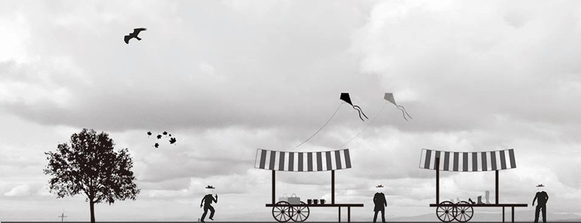

全成市集NCKU Market
共有二大型主題，一為由系會或社團所組成的園遊會，二為以台南在地文創所形成的文創市集展。
Two kinds of themes can be found in the carnival, including "Shops and Stands" comprised of clubs and department associations and "Cultural Market" combined with local culture in Tainan.
夢想拼圖-文創市集 Puzzle of Dreams - Cultural Market

台南具有悠久的歷史，為一人文薈萃的城市，因此希望在校慶當天在園遊會旁劃分一塊區域，讓校內及校外藝術家在宣揚創作理念之餘能夠互相交流，並邀請所有蒞臨校慶園遊會的人們一同欣賞各種不同風格的創作。 如果您對於推廣創作有興趣，是一個喜好藝又術的文藝青年，那麼校慶園遊會當天的文創市集將是您最佳的舞台。
攤位名單 Shops list